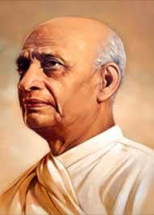

Iron Man of India
Vallabhbhai Jhaverbhai Patel born in 31 October 1875, endeared as Sardar, was an Indian statesman. He is also called the "Unifier of India. He served as the first Deputy Prime Minister of India from 1947 to 1950. He was a barrister and a senior leader of the Indian National Congress, who played a leading role in the country's struggle for independence, guiding its integration into a united, independent nation.
Early Life

Patel was born into a self-sufficient landowning family of the Leva Patidar caste. Reared in an atmosphere of traditional Hinduism, he attended primary school at Karamasad and high school at Petlad but was mainly self-taught. Patel married at the age of 16, matriculated at 22, and passed the district pleader's examination, which enabled him to practice law. In 1900 he set up an independent office of district pleader in Godhra, and two years later he moved to Borsad.
As a lawyer, Patel distinguished himself in presenting an unassailable case in a precise manner and in challenging police witnesses and British judges. In 1908 Patel lost his wife, who had borne him a son and daughter, and thereafter remained a widower. Determined to enhance his career in the legal profession, Patel traveled to London in August 1910 to study at the Middle Temple. There he studied diligently and passed the final examinations with high honours.
From 1917 to 1924 Patel served as the first Indian municipal commissioner of Ahmadabad and was its elected municipal president from 1924 to 1928. Patel first made his mark in 1918, when he planned mass campaigns of peasants, farmers, and landowners of Kaira, Gujarat, against the decision of the Bombay government to collect the full annual revenue taxes despite crop failures caused by heavy rains.
In 1928 Patel successfully led the landowners of Bardoli in their resistance against increased taxes. His efficient leadership of the Bardoli campaign earned him the title sardar (“leader”), and henceforth he was acknowledged as a nationalist leader throughout India. He was considered practical, decisive, and even ruthless, and the British recognized him as a dangerous enemy.
Fight For Independence
Satyagraha in Gujarat
Supported by Congress volunteers Narhari Parikh, Mohanlal Pandya, and Abbas Tyabji, Vallabhbhai Patel began a village-by-village tour in the Kheda district, documenting grievances and asking villagers for their support for a statewide revolt by refusing to pay taxes. Patel emphasised the potential hardships and the need for complete unity and non-violence in the face of provocation response from virtually every village.When the revolt was launched and tax revenue withheld, the government sent police and intimidation squads to seize property, including confiscating barn animals and whole farms. Patel organised a network of volunteers to work with individual villages, helping them hide valuables and protect themselves against raids. Thousands of activists and farmers were arrested, but Patel was not. The revolt evoked sympathy and admiration across India, including among pro-British Indian politicians. The government agreed to negotiate with Patel and decided to suspend the payment of taxes for a year, even scaling back the rate. Patel emerged as a hero to Gujaratis. In 1920 he was elected president of the newly formed Gujarat Pradesh Congress Committee; he would serve as its president until 1945.
Quit India Movement
On the outbreak of World War II, Patel supported Nehru's decision to withdraw the Congress from central and provincial legislatures, contrary to Gandhi's advice, as well as an initiative by senior leader Chakravarthi Rajagopalachari to offer Congress's full support to Britain if it promised Indian independence at the end of the war and installed a democratic government right away. Gandhi had refused to support Britain on the grounds of his moral opposition to war, while Subhash Chandra Bose was in militant opposition to the British. The British government rejected Rajagopalachari's initiative, and Patel embraced Gandhi's leadership again. He participated in Gandhi's call for individual disobedience, and was arrested in 1940 and imprisoned for nine months. He also opposed the proposals of the Cripps' mission in 1942. Patel lost more than twenty pounds during his period in jail.
Speech in Bombay
Patel made a climactic speech to more than 100,000 people gathered at Gowalia Tank in Bombay on 7 August:
The Governor of Burma boasts in London that they left Burma only after reducing everything to dust. So you promise the same thing to India? ... You refer in your radio broadcasts and newspapers to the government established in Burma by Japan as a puppet government? What sort of government do you have in Delhi now?...When France fell before the Nazi onslaught, in the midst of total war, Mr. Churchill offered union with England to the French. That was indeed a stroke of inspired statesmanship. But when it comes to India? Oh no! Constitutional changes in the midst of a war? Absolutely unthinkable ... The objective this time is to free India before the Japanese can come and be ready to fight them if they come. They will round up the leaders, round up all. Then it will be the duty of every Indian to put forth his utmost effort—within non-violence. No source is to be left untapped; no weapon untried. This is going to be the opportunity of a lifetime.